第一次见面
那一天，我们因为一场比赛相遇……
第一次打剧本杀
羲和！！！ 属于我们两个人的剧本起源之路。也是在那天第一次感受到了命运的奇妙
第一次牵手
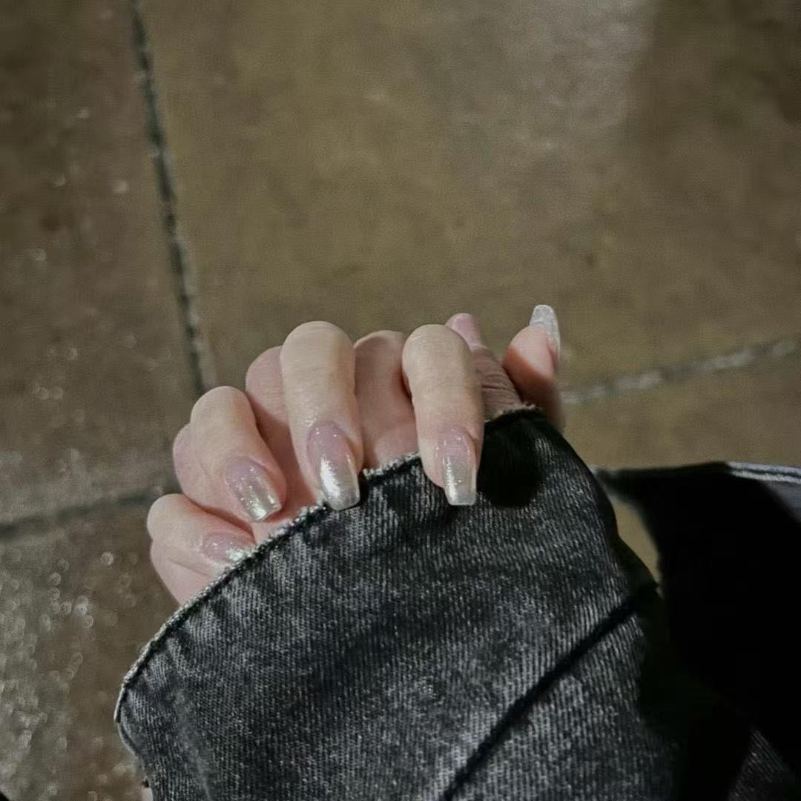那一天，第一次碰到小宝的小手
第一次约会
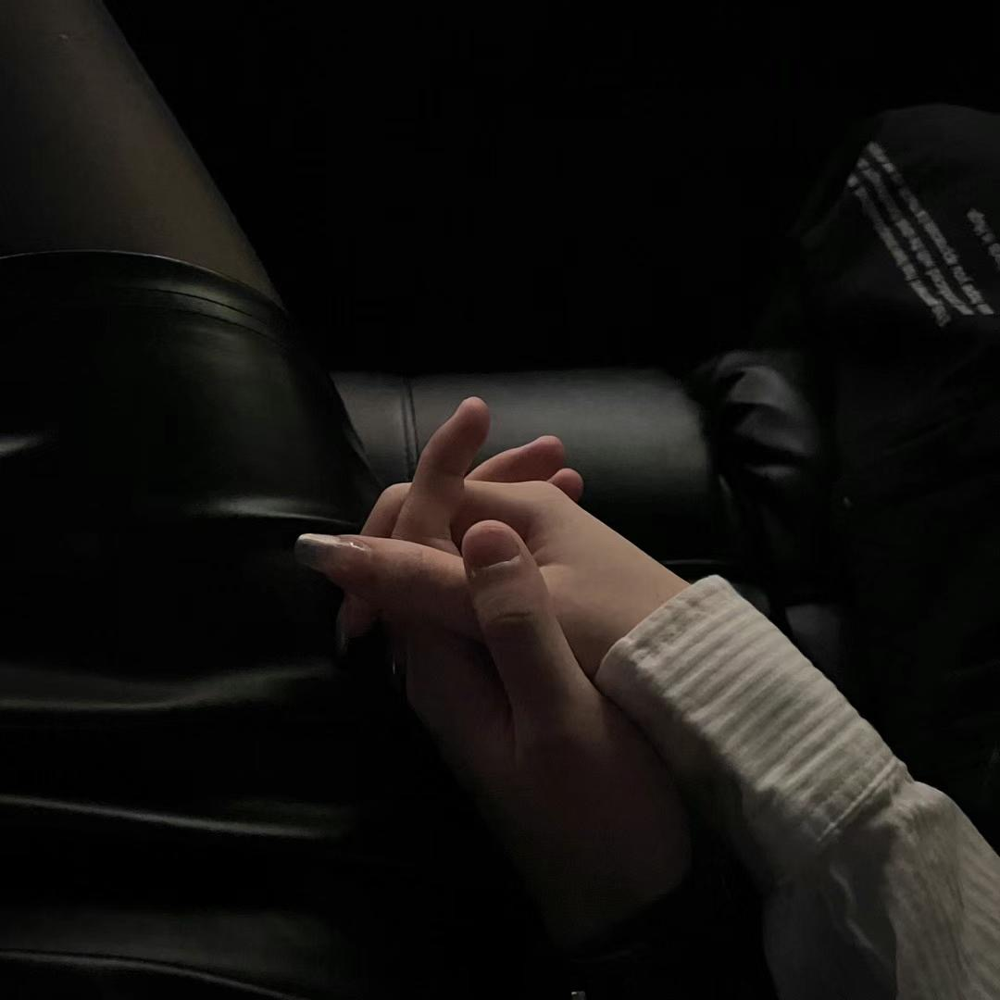吃了一顿拘谨的西餐，看了场浪漫的电影，下车的时候还偷偷亲了小宝一口 嘻嘻～～。
秘密小据点
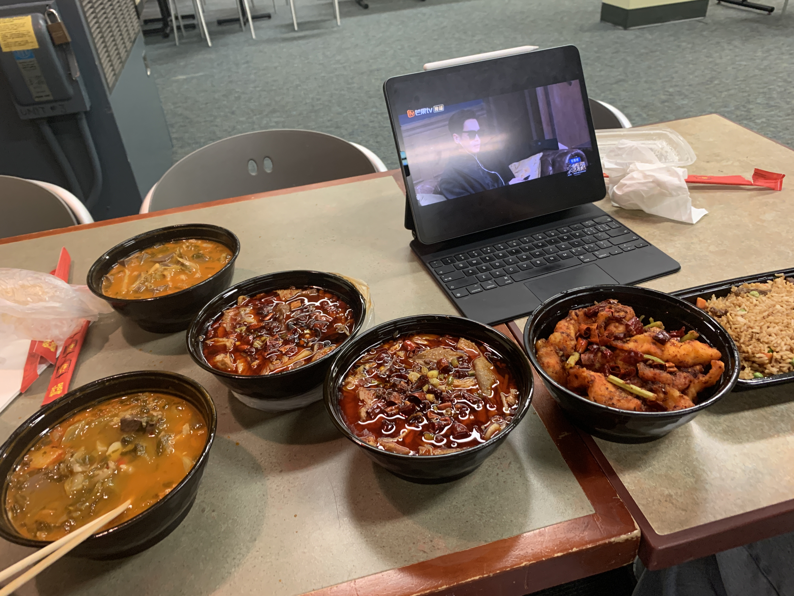据夏氏春秋记载，在2023年上半年位于美国东部Boston Universe的宿舍之一的Towers，每到傍晚Towers地下室就会稳定刷新两只NPC坐着吃饭和看狂飙（虽然到最后也没看完）
第一次旅行
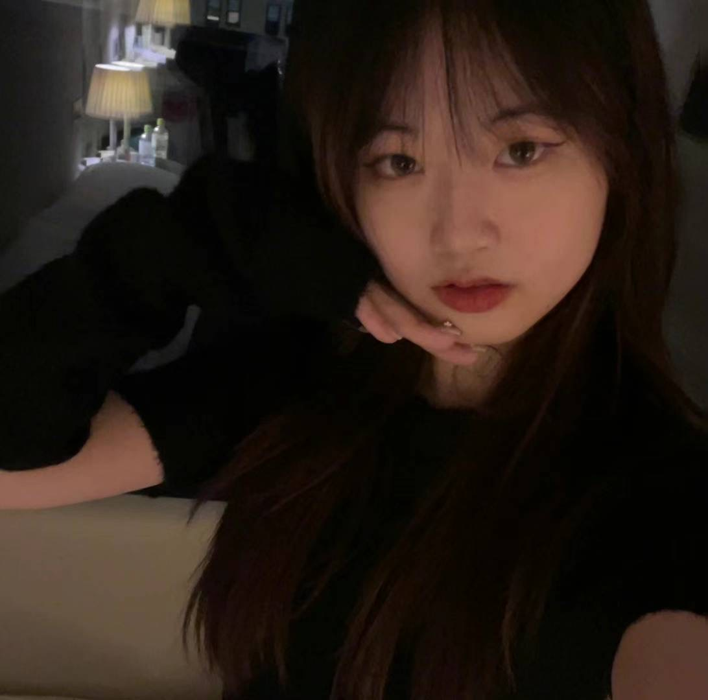纽约之旅！！！属于是两个小乡巴佬进城咯。虽然城里并不好玩，但是第一次和小宝睡在一张床上咯！！！
第一次分开
这一次短暂的分开，让我们意识到了感情中不仅仅有欢心和雀跃还有一些难以克服的困难。这一次的分别让我们更加了解真实的对方，明白对方的需求与困难。我也知道在这段时间中小宝收到了许多的委屈，我在这里再次向小宝道歉，苏尼玛塞，宝宝酱～可以原谅主人吗
第一次一起过万圣节
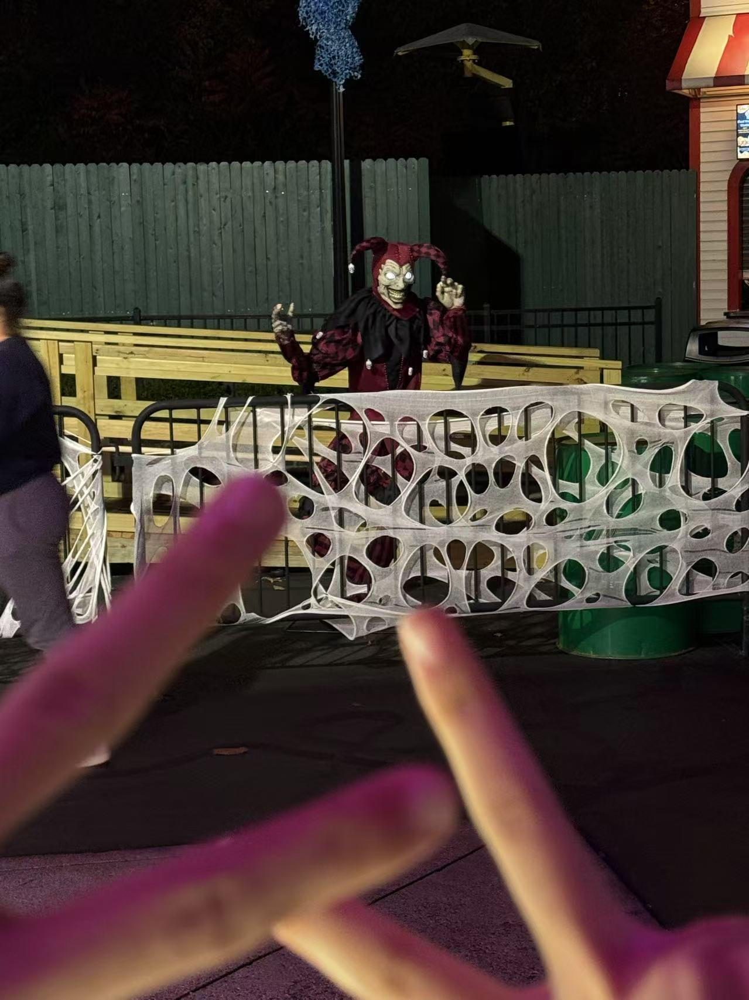分开之后的首次大型活动，我们变得比以往更加紧密更加契合（终生遗憾：没有和小宝一起坐过山车55555）
拉斯维加斯之旅

这如梦似幻的几天经历完美诠释了我小时候看爱情公寓时想象中未来的美好生活---最好的朋友就在身边，最爱的人就在眼前（虽然现在有一位朋友离场了）
第一次一起跨年
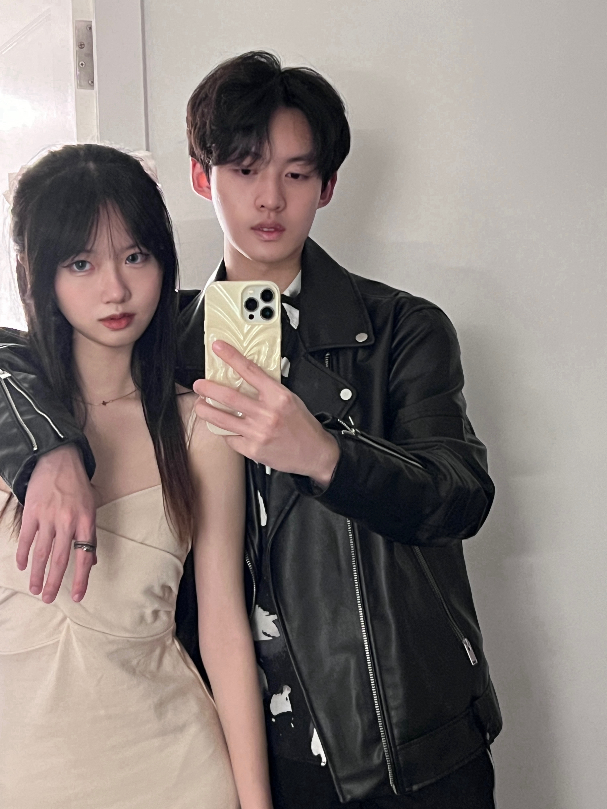 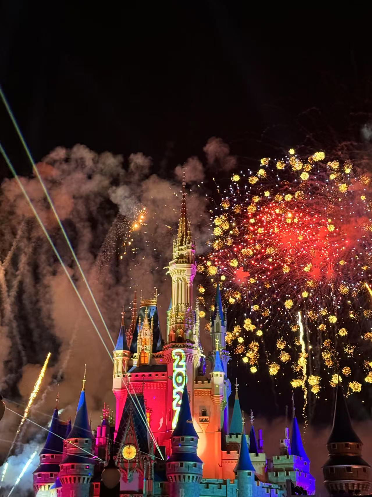想你的风终究还是吹到了迈阿密，幸得身旁有佳人相伴，这大海的波涛也便显得又些平庸了。烟花在城堡的上空彻响，看着你有些晶莹的瞳孔中倒映出璀璨的烟花，我便不禁在想，究竟是烟花点缀了你的美，还是你的眼眸让这夜色中的烟花更加绚烂
一周年啦
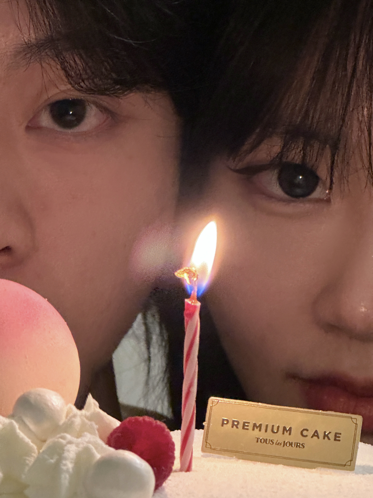一周年的时候感触还是蛮多的，当时确实是有点“猝不及防”，感觉时间过得真快，转眼间我们就已经一起度过了春夏秋冬，经历了四季变更。有的人说，陪你度过四季之人，便是你命中的恩人。与我而言，一个陪我度过了四季之人，便早已融入了我的生命，成为我心中不可或缺的一部分。四季的风景会变，但你陪伴的点滴却永远铭刻在我的记忆里，如同春日的微风、夏日的星光、秋日的落叶和冬日的雪花，静静地沉淀，温柔而深情地融化在我的每一天里。春去秋来，花开叶落，而你，是我生命里永恒的季节。
云南之旅

这是我和小宝在国内的首次旅行，虽然没有太多精心的计划，但每一步都走得格外美好。沿途的风景仿佛也被我们的欢笑点亮了，连微风拂过都带着柔情。山水草木，因为有你的陪伴，都多了一份独特的意义。在大理的日子更是让我整个人都放松下来了，每天睡到自然醒，兴致来了就和小宝开着我们的粉色小跑车出去遛弯，看着日暮渐暗，感受着有些咸腻的海风，与小宝畅谈人生。这让我这种极度害怕衰老的人也不禁觉得这种老年生活也是别有一番风味
第一次陪小宝过生日
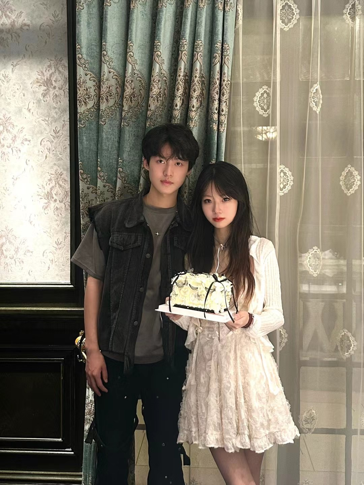又见证小宝成长了一岁 耶！希望小宝以后的每个生日里都会有我的身影出现
芝加哥 启动！
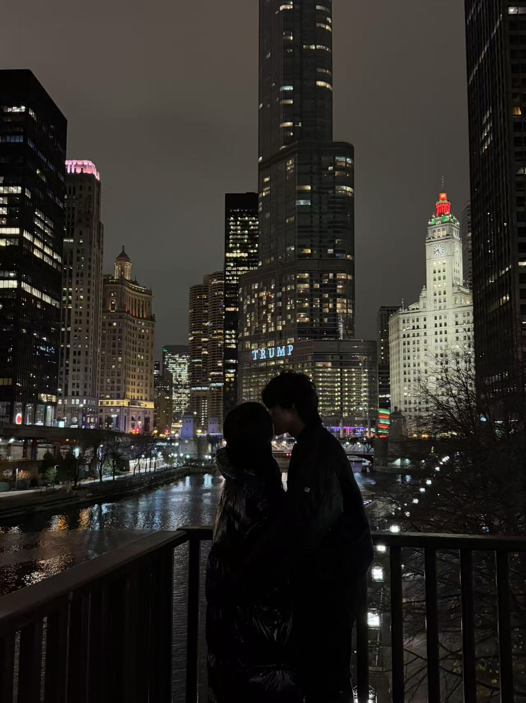原班阵容，原班人马，再次在同一时间向芝加哥进军。只不过少了一位，但显然来不及为他悼念了——毕竟他可能正忙着在家躺平呢，现在迎面而来的是庞大的水族馆乐园，虽然没看到水獭但是深入研究课了一下白鲸的追追，也算是给某个小宝弥补遗憾了。摩天大楼和坐船之旅其实都可以一笔带过了哈，主要还得看晚上四人一屋的节目效果
送行5555
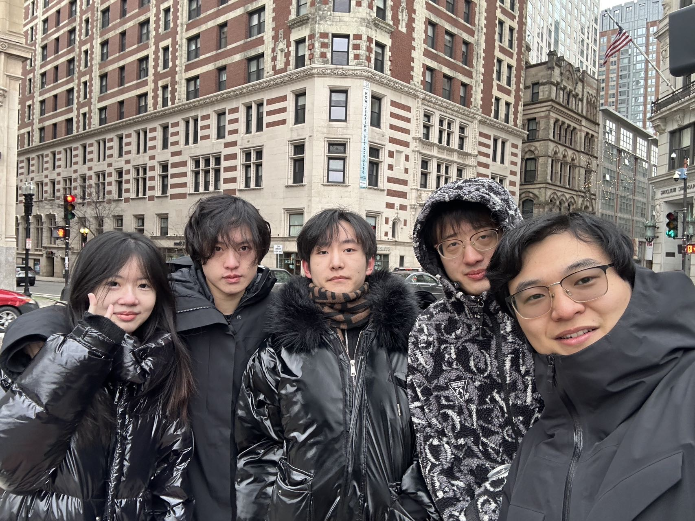伤感地送别了我们可爱地朋友们，留下我们两个孤寡老人独守波士顿了 555555555555555555555
陪小宝过的第二个圣诞节
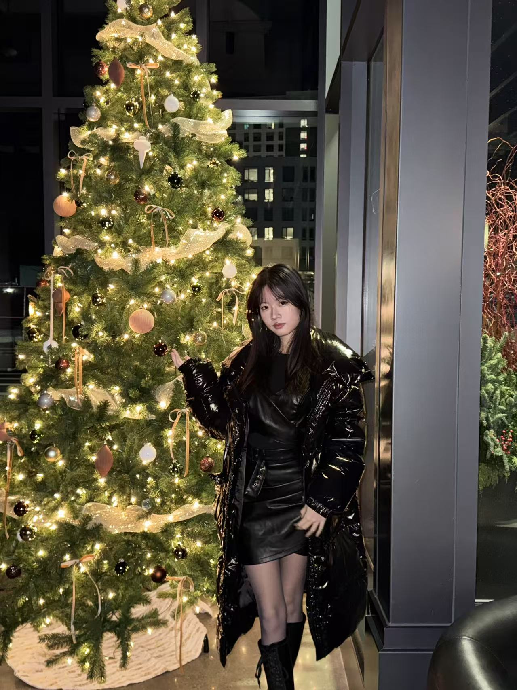这个重大的节日给我们冬眠版的寒假生活提供了一个宝贵外出机会。有一说一这个寿喜烧是尊嘟还挺好吃的，但是最最最最重要的是我帮小宝拍出来好看的圣诞照片👆（在抖音上火了）
两周年啦
不知不觉，我们已经携手走过了两年的时光。犹记得我们的第一次相遇，你那灵动的身影仍历历在目。 虽然不如偶像剧那样，伴着春风撞掉进你怀里那般狗血，但是却有一种难以言喻的美好。这两年来，我们经历了欢喜与悲伤，攀上过山峰也跌落至谷底，我们相互成全也相互理解。没有人知道我们能走到今天付出了多少心血，但同样也没有人能够体会到，我们之间那份用时间沉淀出的默契，那种不言而喻的温暖。每一次争吵过后的和解，每一个难关面前的坚持，都是我们爱的印记。你是我生活中最柔软的力量，也是最坚硬的后盾。是你让我明白什么是真正的爱。我愿陪你走过每一个明天，书写更多属于我们的故事，直到岁月的尽头，仍能在彼此眼中看到初心未改的温柔。